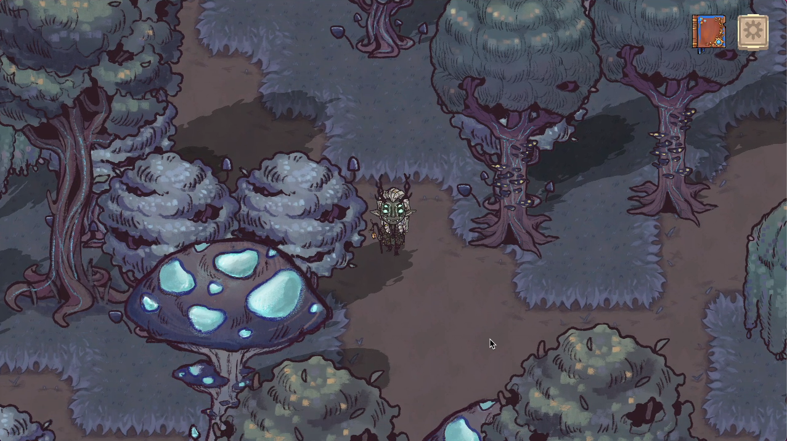

Soul of the Forest 

Role
Timeline
Aug 2023 - April 2024
Tools
Team
WolverineSoft Studio ↗Click to learn more about our awsome stuent-run educational game studio here at the University of Michigan.
Introduction
Soul of the Forest is a turn-based RPG game that draws inspiration from classic and beloved RPG titles like Undertale and Franken. The game combines the best of turn-based strategic combat system and rich overworld exploration. Player is encouraged to follow the hints provided by the NPCs to explore and complete certain interactions in order to advance through the game.
Problem Statement
How can I redesign the current game UI to increase the visibility of system status and effectively guide player through the rich narrative and gameplay content without spoiling the fun of exploration?
After initial design discussion with the the gameplay designers and design lead, the team voted against of the idea of having a UI element informing player of the quest information the due to the risk of exploiting game content too early.However, as development continues and we get more play testing feedback, we discovered:
More than 70% of the players struggle with understanding what to expect for a given quest and tracking their progress.
"I wish I could see my progress on different quests."
"It would be nice to see how many items I collected so far and how many more is needed"
Complex Backend Quest System
Collection Quest Prompt
Design & Development Process
A resigned quest UI system with a quest marker for easy access to current objective and a quest log for contextual background information and progress tracking.
Design Rationale and Competitive Analysis
| Quest Marker | Quest Log | |
|---|---|---|
| Where it is located on the screen | A component of the player HUD (heads-up display), meaning that the information is visually relayed to the player as part of a game’s UI. | A part of the pop-up pause menu, where the player is able to pause the game process and adjust the game settings or read about the their quests. |
| What is the most important information | The current objective Player’s progress on the current objective. | contextual background information about the area detailed description of the current objective Player’s overall progress |
| Examples from some narrative & quests driven games | ||
| More Examples |
After I presented the initial findings to and had a few rounds of discussion with the team, we were able to reach an agreement that it is necessary to implement both because:
-
An on-screen quest marker can make it less intrusive to inform the player of their current objective
-
The quest log can help player to have a better understanding of the storyline and their overall progress
Reflection
Key Learnings
It was my first 0-1 design that allowed me to practice with foundamental research and design skills. I had gained valuable insights on user-centric data collection and analysis through conducting interview, usability testing and affinity mapping. For me, the experience hilighted the importance of data-driven design process and equipped me with essential knowledge on creating an accessible experience.
Next Steps
- Design a schedule builder for users to easily block off time and for better visualization of time allocations.
- Implement a monthly view of My Schedule for easy lookup of upcoming tasks and events.
- Work on the details on analysis and achievement, specifically the userflow of the points and badge system.